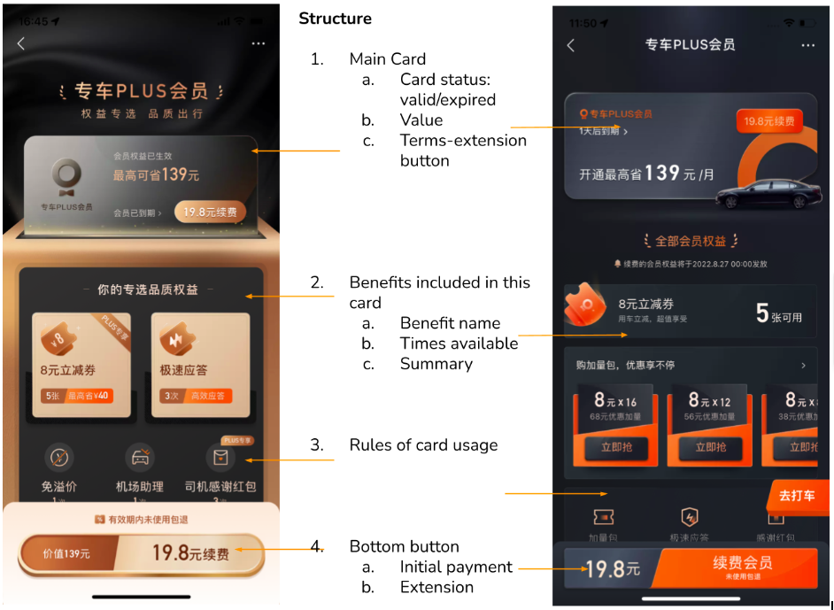
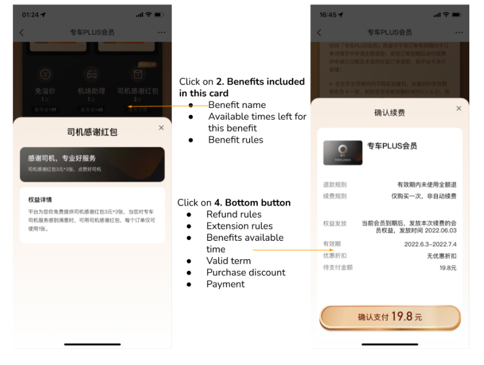
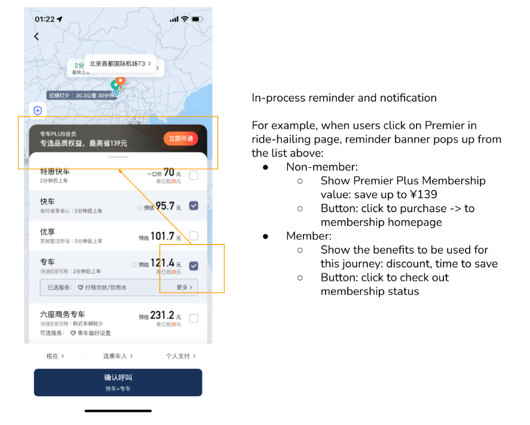

Premier plus membership is a product anchored at high-frequency, medium/high-penetration (penetration is an indicator of a user’s neediness of premier ride; penetration = premier orders / total orders with DiDi) users. As membership period is on monthly basis, we use their first-purchasing time as node to lock their demand for premier ride in the future months. The below six benefits are included:
Discounts: coupon package, for one-time discount;\ Dynamic price overflow free (price overflow exists in setting where demand is far over supply): price overflow exempt on supply-demand imbalance scenarios; Super speed order-taken: order been taken with priorities to save waiting time; Driver red packet: build up ecosystem of thankfulness and trust that users can thank driver for their service with the red packet; Airport pick-up service: for business people we provide guide at the arrival level; Exclusive customer service: membership-only customer service team;
  